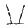
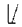
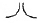
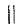
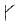
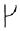
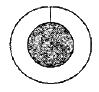
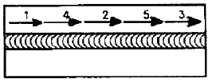

침투비파괴검사기사(구) (2013-03-10 기출문제)
1과목: 침투탐상시험원리
1. 일반적으로 침투탐상검사에서 사용하는 침투액 적용방법으로 옳은 것은?
- 분무법, 솔질법, 담금(침지)법
- 분무법, 정전 분사법, 담금(침지)법
- 솔질법, 현상법, 정전 분사법
- 담금(침지)법, 장상법, 정전 분사법
(정답률: 알수없음)

2. 액체 침투탐상검사시 다음 표면조건 중 검사의 질을 저하시키는 조건과 가장 거리가 먼 것은?
- 젖은 표면
- 거친 표면
- 기름을 바른 표면
- 매끄러운 표면
(정답률: 알수없음)
3. 다음 중 침투액에 따른 기호가 잘못된 것은? (단, KS B 0816을 기준으로 한다.)
- 염색 침투액 : V
- 이원성 형광 침투액 : FB
- 형광 침투액 : F
- 이원성 염색 침투액 : DV
(정답률: 알수없음)
4. 침투탐상시험에서 후처리 때, 현상제의 제거를 위해 일반적으로 사용하는 방법이 아닌 것은?
- 솔질 세척
- 전열 세척
- 공기분사 세척
- 초음파 세척
(정답률: 알수없음)
5. 두께가 45mm, 직경 10m의 구형 탱크를 제작시 외부에서 용접한 다음, X형 홈 내부에서 가우징(Gouging) 후 용접하려고 한다. 가우징 부위의 가장 적절한 검사방법은?
- 방사선투과검사
- 초음파탐상검사
- 자분탐상검사
- 액체침투탐상검사
(정답률: 알수없음)
6. 염색 침투액으로 검사 후 재검사가 필요할 때 형광 침투액을 사용해서는 안 되는 이유는?
- 거짓지시를 나타내는 현상제가 시험체의 표면에 남아 있어서
- 침투액을 혼용해서는 안 되므로
- 염색 침투액은 형광물질의 성능을 약화 시키므로
- 불연속의 평가가 어려워지기 때문에
(정답률: 알수없음)
7. 초음파탐상시험에서 초음파가 경계면에 경사각으로 입사하여 기체의 경계면에 도달하였을 경우 반사되는 초음파의 종류는?
- 종파
- 횡파
- 판파
- 표면파
(정답률: 알수없음)
8. 비파괴검사법 중 검사 속도가 빠르고 자동화가 쉬우며, 전도체의 표면 결함 검출에 감도가 우수한 것은?
- 누설검사
- 초음파탐상시험
- 와전류탐상시험
- 방사선투과시험
(정답률: 알수없음)
9. 침투탐상검사의 적용 용도에 대한 설명으로 옳은 것은?
- 검사체에 존재하는 표면 잔류응력을 확인한다.
- 검사체의 표면에 존재하는 불연속을 검출한다.
- 검사체에 존재하는 이종 성분을 검출한다.
- 검사체에 존재하는 불연속의 크기, 깊이, 위치를 확인하고 평가한다.
(정답률: 알수없음)
10. 철강재를 용접하여 일정시간 경과 후 표면 및 표면직하의 결함 검출에 경제적이고 손쉬운 비파괴검사법은?
- 음향방출시험
- 초음파탐상시험
- 자분탐상시험
- 방사선투과시험
(정답률: 알수없음)
11. 가열양극 할로겐법의 특성을 설명한 것 중 옳은 것은?
- 대기압 하에서 작업할 수 없다.
- 할로겐 추적가스에만 응답할 수 있다.
- 기름에 막혀 있는 누설은 검출할 수 없다.
- 할로겐 추적가스에 장시간 노출되어도 누설신호가 사라지지 않는다.
(정답률: 알수없음)
12. 와류탐삭엄사에 관한 설명으로 틀린 것은?
- 관통형 코일을 보빈코일이라고 한다.
- 내삽형 프로브는 관의 내면검사에 유리하다.
- 프로브형 코일은 표면결함 탐상에 쓰인다.
- 자기비교 코일은 선 또는 관재의 시험체에 이용한다.
(정답률: 알수없음)
13. 다음 중 누설검사를 하는 이유가 아닌 것은?
- 표면의 불연속을 검출하기 위해
- 표준에서 벗어난 누설률과 부적절한 제품을 검출하기 위해
- 시스템 작동에 방해되는 재료의 누설손실을 방지하기 위해
- 돌발적인 누서렝 기인하는 유해한 환경적인 요소를 방지하기 위해
(정답률: 알수없음)
14. 육안검사에 대한 설명으로 틀린 것은?
- 표면은 깨끗해야 한다.
- 사용 중 검사가 가능하다.
- 표면결함만 검출이 가능하다.
- 표면 및 표면하 결함 검출이 가능하다.
(정답률: 알수없음)
15. 자분 분산매가 가져야 할 특성에 대한 설명 중 옳은 것은?
- 휘발성이 크고, 점도는 낮아야 한다.
- 점도가 낮고, 장기간 변질이 없어야 한다.
- 인화점이 낮고, 인체에 유해하지 않아야 한다.
- 적심성은 나쁘며, 결함에서 활발한 화학반응이 일어나야 한다.
(정답률: 알수없음)
16. 비파괴 시험 원리와 그에 따른 비파괴시험 방법이 틀린 것은?
- 모세관 현상 이용 – 침투탐상검사
- 적외선에너지 변화 이용 – 중성자투과검사
- 유체흐름, 압력차 이용 - 누설검사
- 음파의 진행과 반사 – 초음파탐상검사
(정답률: 알수없음)
17. 일반적으로 검사 후 결함의 크기 및 형상을 장기적으로 보전하기 적합하여 많이 사용되는 비파괴검사법은?
- 누설시험
- 자분탐상시험
- 방사선투과시험
- 침투탐상시험
(정답률: 알수없음)
18. 중성자투과시험에 이용되는 중성자빔의 발생원과 거리가 먼 것은?
- 원자로
- 입자가속기
- X선 발생기
- 방사선 동위원소
(정답률: 알수없음)
19. 침투탐상시험 중 가장 탐상감도가 우수한 것은?
- 용제성 염색침투탐상
- 용제성 형광침투탐상
- 후유화성 염색침투탐상
- 후유화성 형광침투탐상
(정답률: 알수없음)
20. 다음 중 비파괴시험적인 요소를 포함하고 있는 것은?
- 경도시험
- 굽힘시험
- 충격시험
- 인장시험
(정답률: 알수없음)
2과목: 침투탐상검사
21. 현장시간을 설정할 때 고려해야할 사항이 아닌 것은?
- 현상제의 종류
- 결함의 크기
- 시험체 온도
- 침투시간
(정답률: 알수없음)
22. 침투탐상검사에서 후처리를 실시하지 않은 경우, 검사체 부식을 유발 할 수도 있는 현상제의 성질은?
- 휘발성
- 흡습성
- 유독성
- 인화성
(정답률: 알수없음)
23. 용접에 의한 압력용기류 등의 제조시에 침투탐상검사를 할 때의 설명으로 틀린 것은?
- 용접공정 중의 탐상시기는 용접 전, 중, 후 3단계로 구분하여 실시할 수 있다.
- 일반 강재인 경우 용접완료 후 상온으로 냉각된 후 시험을 실시토록 한다.
- 고장력강인 경우 용접이 완료된 후 수소취화에 의해 지연균열이 발생할 수 있어 탐상시기는 1일 정도 경과 후 실시토록 한다.
- 퀜칭 및 템터링 한 고강력 강재인 경우 탐상시기는 용접이 완료된 직후 실시하도록 한다.
(정답률: 알수없음)
24. 용제제거성 침투탐상검사에서 에어로졸형 제품을 사용할 때의 적용에 대한 설명으로 틀린 것은?
- 온도가 낮아 잘 분사되지 않을 때는 온수 속에 넣은 다음 사용한다.
- 액화석유가스 등의 분사가스를 충전한 것으로서 보통 상온에서는 3~4kgf/cm2의 압력이다.
- 온도에 따라 압력이 변화하기 때문에 보관 및 사용할 때에는 주의해야 한다.
- 시험면에 적용할 때에는 가능한 한 멀리 떨어져서 분사시켜 골고루 분포되게 한다.
(정답률: 알수없음)
25. 침투탐상검사 시 자외선 조사등의 강도를 측정하는 위치는?
- 광원에서
- 차광막에서
- 시험부 표면에서
- 광원과 시험부의 중간에서
(정답률: 알수없음)
26. 침투액의 시험 방법인 메니스커스 검사(Meniscus Test)방법에 대한 설명으로 틀린 것은?
- 염료의 강도를 평가하는 실제적은 시험방법이다.
- 렌즈와 유리판 사이에 용액을 한 방울 떨어뜨려 검사한다.
- 빛깔이 없는 침투액의 잔류 반점(Spot)직경은 액상층 두께를 나타낸다.
- 렌즈와 유리판 사이의 접촉각은 표면을 적시는 액체의 성질을 나타낸다.
(정답률: 알수없음)
27. 표면거칠기가 거칠은 경우 가장 적용하기 곤란한 침투탐상검사 방법은?
- 수세성 형광침투탐상검사
- 수세성 염색침투탐상검사
- 후유화성 형광침투탐상검사
- 용제제거성 염색침투탐상검사
(정답률: 알수없음)
28. 침투액의 특징 중에 휘발성이 낮아야 하는 가장 중요한 이유는?
- 화재방지
- 결함에 침투된 침투액의 건조 방지
- 과잉 침투액의 물세척 시 반응 때문에
- 모세관 현상에 방해를 주기 때문에
(정답률: 알수없음)
29. 침투탐상검사시 습식 현상제를 시험체에 적용할 때 사전에 점검해야 할 내용 중 가장 우선적으로 점검할 사항은?
- 분무 노즐의 누설여부 점검
- 이물질의 혼입 여부 점검
- 교반 펌프의 작동여부 점검
- 부품의 건조여부 점검
(정답률: 알수없음)
30. 침투탐상검사의 관찰 및 판정에 대한 설명으로 잘못된 것은?
- 습식현상제를 적용한 경우의 관찰은 현상제가 완전히 건조되었을 때 시작한다.
- 현상제가 너무 두껍게 적용되었을 때에는 현상제를 제거하고 그 위에 다시 현상제를 적용한다.
- 확실한 판정을 위해 시험 부위를 깨끗하게 닦아낸 후 밝은 조명하에 확대경을 사용, 육안검사로 확인한다.
- 긁힘, 과잉침투제 등으로 인한 의사모양 유무는 일차판독자의 경험에 의해 분류하고, 적절한 조명하에서 다시 관찰하다.
(정답률: 알수없음)
31. 석유 저장 탱크의 내부에 대하여 보수검사로써 침투탐상검사할 때 세척액(또는 제거액)-침투액-현상액에 대한 조합이 알맞게 연결된 것은 어느 것인가?
- 용제제거성 – 염색 침투액 – 습식현상법
- 수세성 - 형광 침투액 - 건식 현상법
- 수세성 - 염색 침투액 - 건식 현상법
- 용제제거성 - 형광 침투액 – 속건식 현상법
(정답률: 알수없음)
32. 티타늄 합급으로 이루어진 항공기 부품을 침투탐상검사할 경우 미리 확인 해야할 탐상제의 불순물 성분은?
- 인, 망간
- 염소, 불소
- 니켈, 탄소
- 유황, 크롬
(정답률: 알수없음)
33. 스테인리스 재질로 만든 것으로 판의 반쪽 면은 크롬도금을 하고, 그 중심부에는 5개의 별모양의 결함이 큰 것부터 작은 것으로 배열되어 있으며, 나머지 반쪽 면은 모래분사를 하여 중간 거칠기를 갖게 만든 다음, 세척 특성을 감시하기 위하여 사용하는 시험편은?
- A형 대비시험편
- B형 대비시험편
- 모니터 판넨(PSM-panel)
- ISO 1형 시험편
(정답률: 알수없음)
34. 다음 중 형광 침투액에 자외선조사등의 빛이 닿아 발생하는 황록색 가시광선의 파장(nm)으로 옳은 것은?
- 420
- 500
- 550
- 780
(정답률: 알수없음)
35. 다음 중 후유화성 형광 침투탐상시험을 할 때 가장 긴 침투시간을 필요로 하는 결함은?
- 알루미늄 주조품의 콜드셧
- 마그네슘 용접부의 균열
- 스테인리스강 단조품의 균열
- 황동 주조품의 균열
(정답률: 알수없음)
36. 침투탐상시험에서 용제로 전처리를 할 경우 설명으로 옳은 것은?
- 용제는 그리스(grease)를 제거하는데 적절하지 못하다.
- 용제는 기름을 제거하는데 적절하지 못하다.
- 용제는 그리스(grease) 및 기름에 사용해서는 안 된다.
- 용제는 그리스 및 기름을 제거하는 데는 적합하지만 공동(cavity) 부위에 들어가 있는 고체 이물질의 제거에는 부적절하다.
(정답률: 알수없음)
37. 침투탐상검사에서 침투액의 특성 중 강도를 고려할 때 갖추어야할 사항이 아닌 것은?
- 침투성이 좋아야 한다.
- 세척성이 좋아야 한다.
- 색채대비가 잘 되어야 한다.
- 형광성을 갖고 있어야 한다.
(정답률: 알수없음)
38. 다음에 열거한 침투탐상시험 방법 중에서 탐상감도가 가장 우수한 것은?
- 용제제거성 염색 침투액 – 속건식 현상법
- 후유화성 염색 침투액 – 속건식 현상법
- 용제제거성 형광 침투액 – 습식 현상법
- 후유화성 형광 침투액 – 습식 현상법
(정답률: 알수없음)
39. 주조품에 나타나는 결함으로 시험체의 두께 차이에 따른 응고 속도의 차이에 의해 발생하는 고온규열의 일종으로 다양한 폭과 여러 개의 가지가 달린 구불구불한 선 형태로 나타나는 지시는?
- 랩(Lap)
- 수축공(Shrinkage cavity)
- 핫티어(Hot Tear)
- 콜드셧(Cold Shut)
(정답률: 알수없음)
40. 다음 불연속 중 일반적인 침투탐상검사법으로 검출할 수 없는 것은?
- 표면 기공
- 표면 균열
- 표면직하 기공
- 분산한 지시모양
(정답률: 알수없음)
3과목: 침투탐상관련규격
41. 침투탐상 시험방법 및 침투지시모양의 분류(KS B 0816)에서 유화시간과 관련한 내용으로 틀린 것은?
- 형광침투제-기름베이스 : 3분이내
- 형광침투제-물베이스 : 2분이내
- 염색침투제-기름베이스 : 30초이내
- 염색침투제-물베이스 : 30초이내
(정답률: 알수없음)
42. 항공우주용 기기의 침투탐상 검사방법(KS W 0914)에서 침투액의 체류시간은 일반적으로 최소 10분 동안으로 하며 아울러 체류시간이 얼마를 초과하면 건조되지 않게 침투액을 재적용하도록 규정하고 있는가?
- 30분
- 60분
- 90분
- 120분
(정답률: 알수없음)
43. 항공우주용 기기의 침투탐상 검사방법(KS W 0914)의 규정에서 “평가”란 용어의 뜻으로 옳은 것은?
- 지시를 검출하기 위하여 행하는 검사
- 지시무늬의 발생원인 및 그 종류를 판정하는 것
- 침투탐상 처리공정 종료 후 적절한 조명 아래에서 하는 구성부품의 육안 검사
- 지시무늬를 판단한 후에 구성 부품의 합격 여부를 결정하기 위하여 하는 검토
(정답률: 알수없음)
44. 보일러 및 압력용기에 대한 표준침투탐상검사(ASME Sec.V Art.24 SE-165)에 따라 압출 강판에서 주로 발견될 수 있는 불연속은?
- 겹침
- 기포
- 콜드셧
- 융합 부족
(정답률: 알수없음)
45. 보일러 및 압력용기에 대한 침투탐상검사(ASME Sec.V Art.6)에 따라 형광침투탐상시험을 할 때에 자외선조사등의 강도 점검으로 가장 올바른 것은?
- 사용 후
- 사용 매 2시간 마다
- 사용 매 4시간 마다
- 사용 매 8시간 마다
(정답률: 알수없음)
46. 침투탐상 시험방법 및 침투지시모양의 분류(KS B 0816)에 따른 침투탐상시험 방법에서 침투액 기호의 조합으로 틀린 것은?
- VA : 수세성 염색 침투액
- DFB : 기름베이스 유화제를 사용한 이원성 형광 침투액
- DVC : 용제제거성 염색 침투액
- FD : 물베이스 유화젤르 이용한 후유화성 형광 침투액
(정답률: 알수없음)
47. 다음 중 ASME Sec. Vlll Div.1에서 규졍하고 있는 침투탐상시험시 평가 대상에서 제외되는 결함 지시는?
- 1/6인치 크기의 타원형 결함지시
- 1/8인치 크기의 직선형 결함지시
- 1/10인치 크기의 타원형 결함지시
- 1/18인치 크기의 원형 결함지시
(정답률: 알수없음)
48. 침투탐상 시험방법 및 침투지시모양의 분류(KS B 0816)에 따른 형광침투액의 제거 확인에 필요한 시험체 표면의 최소 자외선 강도는 몇 μW/cm2 이상 인가?
- 800
- 1500
- 2000
- 2500
(정답률: 알수없음)
49. 침투탐상 시험방법 및 침투지시모양의 분류(KS B 0816)에 따르면 탐상 결과, 합격한 시첨체에 표시를 할 때 표시방법과 거리가 먼 것은?
- 각인
- 부식
- 주황색 착색
- 적갈색 착색
(정답률: 알수없음)
50. 보일러 및 압력용기에 대한 표준침투탐상검사(ASME Sec.V Art.24 SE-165)에서 사용되는 용제 세척제의 성분 함량을 제한하는 원소는?
- 수소(H)
- 붕소(B)
- 탄소(C)
- 염소(Cl)
(정답률: 알수없음)
51. 보일러 및 압력용기에 대한 침투탐상검사(ASME Sec.V Art.6)에 따라 알루미늄 용접부의 콜드셧을 검출하고자 할 때 수세성 형광침투제의 최소 침투시간은?
- 5분
- 7분
- 10분
- 14분
(정답률: 알수없음)
52. 보일러 및 압력용기에 대한 침투탐상검사(ASME Sec.V Art.6)에서 전처리 세척은 시험부로부터 얼마만큼 해주어야 하는가?
- 시험부에서 10mm 이내
- 시험부에서 25mm 이내
- 시험부에서 50mm 이내
- 시험부만
(정답률: 알수없음)
53. 항공우주용 기기의 침투탐상 검사방법(KS W 0914)에 따라 터빈 엔진의 중요 구성부품 정비검사에는 어떤 탐상제만을 사용하도록 규정하고 있는가?
- 수세성 형광침투액 계통
- 용제제거성 형광침투액 계통
- 후유화성 형광침투액(친유성 유화제) 계통
- 후유화성 형광침투액(친수성 유화제) 계통
(정답률: 알수없음)
54. 침투탐상 시험방법 및 침투지시모양의 분류(KS B 0816)에서 현상제의 점검방법으로 옳은 것은?
- 사용 중인 현상제의 성능시험을 하여 부착상태가 균일하지 않을 경우 조정 후에 사용한다.
- 사용 중인 현상제의 성능시험을 하여 식별성이 저하되거나, 현상성능의 열화가 인정된 경우 조정 후에 사용한다.
- 사용 중인 건식현상제 겉모양 검사를 하여 형광 잔류가 생겼을 때나 현상성능 저하가 인정되는 경우 조정 후에 사용한다.
- 사용 중인 습식현상제 겉모양 검사를 하여 적정농도를 유지할 수 없게 되고, 현상성능 저하가 인정되었을 때는 폐기한다.
(정답률: 알수없음)
55. 침투탐상 시험방법 및 침투지시모양의 분류(KS B 0816)에 의한 결함의 분류 중 독립 결함에 해당되지 않는 것은?
- 갈라짐
- 선상 결함
- 분산 결함
- 원형상 결함
(정답률: 알수없음)
56. 침투탐상 시험방법 및 침투지시모양의 분류(KS B 0816)에 따른 시험 기록에서 조작조건으로 규정되지 않은 것은?
- 세척시간 및 온도
- 건조 온도 및 시간
- 현상시간 및 관찰시간
- 세척수의 온도와 수압
(정답률: 알수없음)
57. 보일러 및 압력용기에 대한 침투탐상검사(ASME Sec.V Art.6)에서 최소 침투시간이 가장 긴 것은?
- 강용접부의 균열
- 플라스틱의 균열
- 알루미눔의 단조품의 랩
- 세라믹의 가공
(정답률: 알수없음)
58. 항공우주용 기기의 침투탐상 검사방법(KS W 0914)에 따른 검사시, 수성(수용성, 수현탁성)현상제에 관한 사항으로 틀린 것은?
- 수성 현상제는 구성 부품의 수세 후에 적용시켜야 하며, 구성부품이 건조되고 나서 적용하면 안 된다.
- 수용성 현상제는 특별한 지시가 없는 한 염색 침투탐상방법에는 적용하면 안 된다.
- 수용성 현상제는 특별한 지시가 없는 한 수세성 형광침투탐상방법에는 적용하면 안 된다.
- 수성 현상제는 스프레이, 홀려보내기 또는 침지에 의해 적용하여야 한다.
(정답률: 알수없음)
59. 보일러 및 압력용기에 대한 침투탐상검사(ASME Sec.V Art.6)에서 용제제거성 잉여 침투액의 제거 방법으로 적합하지 않은 것은?
- 침투액이 제거되는 것을 최소화하기 위해 용제를 다량으로 사용하지 않는다.
- 침투액 적용 후 현상처리 전에 용제를 시험면에 붓는다.
- 침투액의 흔적이 거의 없어질 때 까지 걸레 등으로 제거한다.
- 규정된 침투시간이 경과한 후 표면에 잔류한 침투액을 제거해야 한다.
(정답률: 알수없음)
60. 보일러 및 압력용기에 대한 침투탐상검사(ASME Sec.V Art.6)에 따라 침투탐상검사를 하고자 할 때 표준적인 시험체의 표면온도 범위는?
- 100~150°F
- 90~145°F
- 60~135°F
- 40~125°F
(정답률: 알수없음)
4과목: 금속재료학
61. 해수에서 순도가 높은 금속 덩어리를 채취가 가능하며 비중이 알루미늄의 약 2/3 정도 되는 금속은?
- Cd
- Cu
- Zn
- Mg
(정답률: 알수없음)
62. 강에서 고온취성의 직접적인 원인이 되는 것은?
- FeO
- FeS
- MnO
- Fe3P
(정답률: 알수없음)
63. 탄소강의 열처리에서 불림(nornalizing)처리로 얻을 수 있는 효과가 아닌 것은?
- 내부응력 감소
- 결정립의 조대화
- 저탄소강의 피삭성 개선
- 가공에 따른 뷸균질성 감소
(정답률: 알수없음)
64. 팽창계수 아주 적어 시계 태엽, 정밀기계 부품으로 사용하는 것은?
- 인바
- 고망간강
- 탕갈로이
- 고규소강
(정답률: 알수없음)
65. Al-Cu-Si계 합금으로써 Si를 넣어 주조성을 개선하고 Cu를 첨가하여 피삭성을 향상시킨 합금은?
- Y합금
- 로엑스(Lo-Ex) 합금
- 라우탈(Lautal)
- 하이드로날륨(Hydronalium)
(정답률: 알수없음)
66. 분말야금법(Powder Metallurgy)에 대한 설명으로 틀린 것은?
- 경하고 취약한 금속제품의 단조가 가능하다.
- 통상의 용융방법으로는 얻을 수 없는 고융점 금속재료의 제조에 응용할 수 있다.
- 재료를 용해하지 않으므로 용기나 탈산제 등에서 오는 불순물의 혼입이 없어 순수한 금속을 제조할 수 있다.
- 부분적 용해는 있으나 전부 또는 대부분이 용해되는 일이 없으므로 각 성분금속의 배합비대로 또한 분말의 혼합이 균일하면 균일제품이 얻어진다.
(정답률: 알수없음)
67. 주철에 있어서 마우러(Maurer) 조직도란?
- C와 Mn의 양에 따른 조직 관계를 표시한 것이다.
- 냉각 속도와 (Co + Si)%의 변화에 따른 주철 조직의 변화를 표시한 것이다.
- 일정 냉각 속도에서 C와 P의 양에 따른 조직 관계를 표시한 것이다.
- 일정 냉각 속도에서 C와 Si의 양에 따른 조직 관계를 표시한 것이다.
(정답률: 알수없음)
68. 오스테나이트형 스테인리스강의 입계부식을 방지하기 위한 방법을 설명한 것 중 틀린 것은?
- 탄소 함량을 약 0.03% 이하로 낮게 한다.
- 쇼트 파이닝을 실시하고, 고 Ni 재료를 사용한다.
- Cr 탄화물의 석출을 막기 위하여 Ti, Nb 등을 첨가한다.
- 고온으로 가열하여 Cr 탄화물을 고용시킨 후에 급냉한다.
(정답률: 알수없음)
69. 형상기억효과의 종류 중 전방위 형상기억에 대한 설명으로 옳은 것은?
- 일반적인 일방향 형상기억합금이며, 오스테나이트상의 형상만을 기억하는 현상이다.
- 오스테나이트의 형상과 더불어 마텐자이트상이 변형되었을 때의 형상도 기억하는 현상이다.
- 열탄성 마텐자이트 변태에 기인하며 초탄성에 의한 형상기억 효과는 응력부하온도에 의존하는 현상으로 응력유기 마텐자이트가 외부응력이 제거되면서 오스테아니트로 변태함으로 생기는 현상이다.
- 변형상태에서 시효시키면 나타나는 현상으로 온도에 따라 오스테나이트상으로부터 중간상을 거쳐 저온상으로 변타하며 이 때 마텐자이트 변태도 동반되는 현상이다.
(정답률: 알수없음)
70. 화이트 골드(White gold)에 대한 설명으로 옳은 것은?
- 백금에 황금을 첨가한 재료이다.
- 백금에 Pd, Cu를 첨가한 재료이다.
- Au, Ni, Cu, Zn을 합금한 은백색 재료이다.
- 황금에 Sn을 첨가하여 적색을 갖는 재료이다.
(정답률: 알수없음)
71. 침탄 후 2차 담금질(quenching)의 목적으로 옳은 것은?
- 표면의 연화
- 표면의 경화
- 표면부의 결정 미세화
- 중심부의 결정입도 미세화
(정답률: 알수없음)
72. 순철의 변태점의 관한 설명으로 틀린 것은?
- A3변태는 약 910℃에서 일어난다.
- 자기변태점은 약 768℃에서 일어난다.
- 순철의 변태점은 가열 및 냉각속도와 무관하다.
- A3변태는 가열에 의해 BCC 격자가 FCC 격자로 변한다.
(정답률: 알수없음)
73. 피로강도를 증가시키는 방법으로 옳은 것은?
- 표면 거칠기를 증가시킨다.
- 표면층의 강도를 감소시킨다.
- 가능한 한 노치가 많게 한다.
- 표면 압연 및 쇼트 피이닝 처리를 한다.
(정답률: 알수없음)
74. 가단주철의 성질에 대한 설명으로 틀린 것은?
- 백심가단주철은 두께 20~25mm 두꺼운 주물에 적합하다.
- 내식성, 내충격성, 내열성이 우수하고 절삭성이 좋다.
- 흑심가단주철의 인장강도는 30~40kgf/mm2이다.
- 가단주철의 경도는 Si 함량이 높을수록 높다.
(정답률: 알수없음)
75. 구리(Cu)에 대한 설명 중 틀린 것은?
- 전기전도도가 은(Ag) 다음으로 크다.
- 점성이 작아서 절삭성이 우수하다.
- 결정격자 구조는 면심입방격자(FCC)이다.
- 자연수 중에서 보호피막이 생기가 쉬워 부식률이 적다.
(정답률: 알수없음)
76. Fe-C 평형 상태도에 있어서 2성분계 상태도의 기본형과 관계가 없는 것은?
- 공정형
- 공석형
- 포정형
- 편정형
(정답률: 알수없음)
77. Ni 합금 중 실용합금이 아닌 것은?
- 애드미럴티 메탈(Admiralty metal)
- 큐푸로 니켈(Cuorinickel)
- 콘스탄탄(Constantan)
- 모넬 메탈(Monel metal)
(정답률: 알수없음)
78. 고체 침탄법에서 침탄 촉진제로소 가장 많이 사용하는 것은?
- CaO
- NaCN
- BaCO3
- CO2 + N2
(정답률: 알수없음)
79. 탄소함량애 대한 강의 설명으로 옳은 것은?
- 고탄소강일수록 성형성이 좋다.
- 0.12%C 이하의 저탄소강을 일명 경강이라 한다.
- 고속도공구강은 탄소함량이 0.3~0.5%범위이다.
- 중탄소강은 Q, T(담금질, 뜨임)용으로 많이 사용된다.
(정답률: 알수없음)
80. Fe-C 평형 상태도에서 공석점의 자유도는? (단, 압력은 일정하다.)
- 0
- 1
- 2
- 3
(정답률: 알수없음)
5과목: 용접일반
81. AW500 용접기를 사용하여 300A로 용접을 할 때 용접입열량을 구하면 몇 J/cm 인가? (단, 아크 전압은 30V, 무부하 전압은 80V, 용접속도는 20 cm/min 이다.)
- 9000
- 27000
- 48000
- 150000
(정답률: 알수없음)
82. 용접을 기본기호와 명치의 설명으로 틀린 것은?
- 급경사면 양쪽면 V형 홈 맞대기 이음 용접은

이고, 급경사면 양쪽면 K형 홈 맞대기 이음 용접은
이다. - 양면 플랜지형 맞대기 이음 용접은

이고, 평면형 평행 맞대기 이음 용접은
이다. - 부분 용입 한쪽면 V형 맞대기 이음 용접은 이고, 부분 용입 한쪽면 K형 맞대기 이음 용접은

이다. - 한쪽면 U형 홈 맞대기 이음 용접은 이고, 한쪽면 J형 홈 맞대기 이음 용접은

이다.
(정답률: 알수없음)
83. 테르밋 용접법의 일반적인 특징으로 틀린 것은?
- 전기가 필요 없다.
- 용접시간이 길고, 용접 후 변형이 크다.
- 차축, 레일의 접합 등 비교적 큰 단면의 맞대기 용접에 이용된다.
- 용접 이음부의 홈은 가스 절단한 그대로가 좋고, 특별한 모양의 홈을 필요로 하지 않는다.
(정답률: 알수없음)
84. 열적 핀치효과(pinch dffect)에 대한 설명으로 올바른 것은?
- 높은 온도의 아크 플라스마가 얻어지는 아크 성질이다.
- 가스용접에서 청정작용에 이용되는 성질이다.
- 서비머지드 용접에 이용되는 제습 효과이다.
- 고주파용접에서 밀도를 높이는 효과이다.
(정답률: 알수없음)
85. 플라스마 아크 용접에 관한 특징 설명을 올바른 것은?
- 수동 용접도 쉽게 할 수 있다.
- 일반 아크 용접기에 비해 무부하 전압이 낮다.
- 일반적으로 설비비가 적게 든다.
- 철강 재료만 용접이 가능하다.
(정답률: 알수없음)
86. 15℃ 15기입하에서 아세톤 1L 에 대하여 아세틸렌 가스는 약 몇 L 가 용해 되는가?
- 285
- 325
- 375
- 420
(정답률: 알수없음)
87. 아크 전류가 일정할 때 아크 전압이 높아지면 용접봉의 용융 속도가 늦어지고 아크 전압이 낮아지면 용접봉의 용융 속도가 빨라지는 아크의 특성은?
- 부저항 특성
- 절연회복 특성
- 전압회복 특성
- 아크길이 자기제어 특성
(정답률: 알수없음)
88. 다음 용접법의 분류에서 용접에 해당하는 용접법은?
- 심 용접
- 초음파 용접
- 업셋 용접
- 테르밋 용접
(정답률: 알수없음)
89. 용접시 용접시공조건에 의해서 변형과 잔류응력을 감소시키는 방법으로 틀린 것은?
- 용접 후 용접 금속부의 변형과 잔류 응력을 경감하는 방법으로 가우징법을 쓴다.
- 용접 전에 변형 방지대책으로 억제법, 역변형법을 쓴다.
- 용접 시공에 의한 경강법으로는 대칭법, 후진법, 스킵법 등을 쓴다.
- 용접 중 모재의 열전도를 억제하여 변형을 방지하는 방법으로는 도열법을 쓴다.
(정답률: 알수없음)
90. 다음 중 고온균열에 해당되는 것은?
- 토 균열
- 설퍼 균열
- 루트 균열
- 비드 밑 균열
(정답률: 알수없음)
91. 볼트(bolt)나 환봉 등을 강판이나 형가 등에 직접 용접하는 방법으로 모재나 볼트 사이에 순간적으로 아크를 발생시키는 용접방법은?
- 스터드 용접(stud welding)
- 테르밋 용접(thermit welding)
- 불활성 가스 아크 용접(intert gas arc welding)
- 유니언 멜트 용접(union melt welding)
(정답률: 알수없음)
92. TIG용 텅스텐 전극봉의 종류 및 KS등급기호 YMTh-1의 설명으로 틀린 것은?
- 1% 토륨 함유 텅스텐 전극봉이다.
- 전극봉의 식별용 색은 황색이다.
- ACHF 전용 전극봉이며 Al, Mg 합금의 접합에 쓰인다.
- 전자 방사능력이 뛰어나며 아크가 안정하다.
(정답률: 알수없음)
93. 필릿 용접 이음부의 루트 부분에 생기는 저온 균열로 모재의 열 팽창 및 수축에 의한 비틀림이 주 원인이라고 판단되는 균열은?
- 루트 균열(root crack)
- 비드 밑 균열(under bead crack)
- 힐 균열(heel crack)
- 설퍼 균열(sulfur crack)
(정답률: 알수없음)
94. 탄산가스 아크 용접에서 사용하는 복합 와이어의 종류 중 그림에 나타난 복합 와이어의 종류는?

- 아코스 와이어
- Y관상 와이어
- S관상 와이어
- NCG 와이어
(정답률: 알수없음)
95. 산소-아세틸렌 절단과 비교한 산소-프로판(LP)가스 절단의 설명으로 잘못된 것은?
- 절단 상부 기슭이 녹은 것이 적다.
- 절단면이 미세하며 깨끗하다.
- 슬래그 제거가 쉽다.
- 후판 절단시 아세틸렌보다 느리다.
(정답률: 알수없음)
96. 아크 용접법 중 2개의 텅스텐 전극봉 사이에서 아크를 발생시켜 아크열을 이용하여 용접하는 것은?
- 테르밋 용접
- 불활성 가스 금속 아크 용접
- 탄산가스 아크 용접
- 원자 수소 아크 용접
(정답률: 알수없음)
97. 다음 전기 저항 용접법의 종류 중 맞대기(butt) 용접이 아닌 겹치기(lap) 용접인 것은?
- 업셋 용접
- 프로젝션 용접
- 퍼커션 용접
- 플래시 용접
(정답률: 알수없음)
98. 용접에 의한 변형을 작게 하기 위하여 주로 박판용접에 적합한 아래 그림과 같은 용착법은?

- 대칭법
- 전진법
- 후진법
- 스킵법
(정답률: 알수없음)
99. 가스용접용 토치는 사용하는 아세틸렌가스 압력에 의하여 저압식, 중압식, 고압식으로 나누어진다. 저압식 토치의 아세틸렌 공급압력으로 가장 적합한 것은?
- 2.⑤kgf/cm2 이상
- 0.07kgf/cm2 미만
- 0.4kgf/cm2 이상
- 1.5kgf/cm2 미만
(정답률: 알수없음)
100. MIG 용접의 전류밀도는 TIG 용접의 몇 배 정도인가?
- 2배
- 4배
- 6배
- 10배
(정답률: 알수없음)